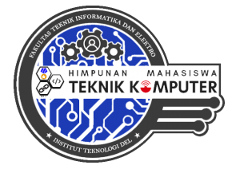

Himpunan Mahasiswa

Himatek
Program Studi Teknik Komputer memiliki himpunan mahasiswa. Berikut detail dari himpunan Program Studi Teknik Komputer.
Nama Organisasi : Himpunan Mahasiswa Teknik Komputer (HIMATEK)
Didirikan pada : 08 Februari 2016
Disahkan pada : 12 Maret 2017
Anggota : Seluruh Mahasiswa Jurusan Teknik Komputer Institut Teknologi Del
Sejarah berdirinya Himpunan Mahasiswa Teknik Komputer
Himpunan Mahasiswa Teknik Komputer atau yang biasa disebut HIMATEK berdiri pada tanggal 08 Februari 2016, di Jurusan Teknik Komputer, Institut Teknologi Del, Sitoluama, Laguboti, Sumatera Utara, Indonesia. Tetapi pengesahan terhadap HIMATEK Institut Teknologi Del baru dilakukan pada tanggal 12 Maret 2017, dan setelah dilakukannya pengesahan barulah HIMATEK ini resmi dikatakan berdiri pada tanggal tersebut. Pada awalnya HIMATEK di Kepala Oleh Bpk. Albert Sagala, dan pada periode pertama HIMATEK ini diketuai oleh Sdr. Jonson E. Panjaitan, dan kemudian berganti kepemimpinan kepada Bpk. Pandapotan Siagian, dan pada periode kedua HIMATEK diketuai Oleh Sdr. Panca Putra Simanjuntak, dan pada periode ketiga HIMATEK diketuai Oleh Sdr.Kevin Aprilio Turnip. Tujuan didirikannya Himpunan Mahasiswa Teknik Komputer ini adalah menjadikan sebuah wadah bagi mahasiswa-mahasiswi jurusan Teknik Komputer untuk memberikan sumbangsih yang nyata bagi perkembangan dan kemajuan pada bidang IT di Indonesia, sekaligus sebagai tempat untuk melatih kemampuan manajemen kempimpinan dalam berorganisasi.
SUSUNAN PENGURUS HIMPUNAN

Kevin Aprilio Turnip
Ketua Himpunan Prodi

Ferry Vernando Hezron Siagian
Wakil Ketua Himpunan Prodi

Ojak Hotmatua Sinaga
Sekretaris Himpunan Prodi

Fibonaccy Elisabeth Gultom
Bendahara Himpunan Prodi
Interest Group
Prodi D-III Teknik Komputer memiliki program Interest Group yang bertujuan untuk mengembangkan minat dan kemampuan masing-masing mahasiswa. Masing-masing interest group ini memiliki pembimbing yang akan mengarahkan dan membimbing mahasiswa untuk mengembangkan minat. Program ini membuka 4 bidang minat, yaitu:

Administrasi jaringan komputer bertugas untuk mengatur jaringan komputer baik dalam skala kecil maupun skala besar sehingga berjalan lancar dan efisien. Tanpa administrasi jaringan akan sulit untuk mempertahankan jaringan diskala besar. Mata kuliah yang mendukung interest group Administrasi Jaringan Komputer adalah Antar Jaringan, Administrasi Jaringan, Perangkat Lunak Sistem Jaringan, Keamanan Jaringan, dan Jaringan Komputer.

Cloud Computing merupakan model untuk mengakses jaringan dengan mudah dan mudah diakses ke kumpulan sumber daya komputasi yang dapat dikonfigurasi (misalnya jaringan, server, penyimpanan, aplikasi, dan layanan) yang dapat dengan cepat ditetapkan dengan layanan manajemen penyedia interaksi. Mata kuliah yang mendukung Cloud Computing adalah Penerapan Infrastruktur Cloud, Manajemen Media Penyimpanan Enterprise, dan Virtualisasi Komputer.

Sistem tertanam merupakan sistem komputer khusus yang dirancang untuk menjalankan tugas tertentu atau bagian dari sebuah sistem yang besar atau produk. Mata kuliah yang mendukung interest group sistem tertanam adalah Sistem Tertanam, Dasar Elektronika, dan Perancangan Antarmuka Pengguna.

Kemanan jaringan merupakan suatu cara atau suatu system yang digunakan untuk memberikan proteksi atau perlindungan pada suatu jaringan agar terhindar dari berbagai ancaman luar yang mampu merusak jaringan. Matakuliah ini diampuh pada semester 6.
1. Administrasi Jaringan Komputer
2. Cloud Computing
3. Embedded System
4. System Security
Kemanan jaringan merupakan suatu cara atau suatu system yang digunakan untuk memberikan proteksi atau perlindungan pada suatu jaringan agar terhindar dari berbagai ancaman luar yang mampu merusak jaringan. Matakuliah ini diampuh pada semester 6.